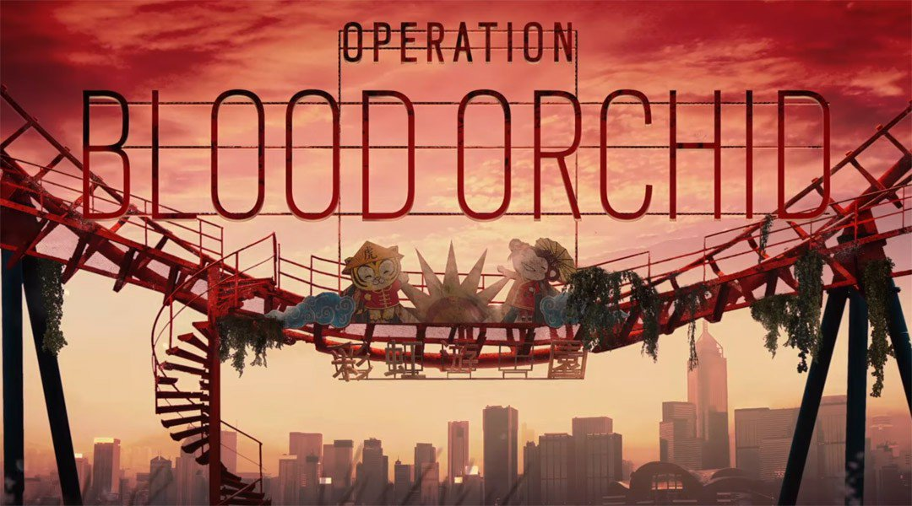

Tom Clancy's Rainbow Six Siege Operation Blood Orchid aangekondigd
Ubisoft heeft de Tom Clancy's Rainbow Six Siege Operation Blood Orchid aangekondigd. De nieuwe update is vanaf 29 augustus te spelen op de PlayStation 4, Xbox One en Windows PC. De update brengt veel nieuwe content met zich mee. Hieronder valt een nieuwe map, drie nieuwe Operators en vele nieuwe aanpassingsvoorwerpen.
Tom Clancy's Rainbow Six Siege Operation Blood Orchid update
Spelers die een Season Pass van Tom Clancy’s Rainbow Six Siege tot hun beschikking hebben, kunnen vanaf 29 augustus met de Operators spelen. Deze zullen vanaf 5 september voor alle andere spelers vrij te spelen zijn met in-game Renown. Op 26 augustus kunnen mensen die geïnteresseerd zijn live kijken naar het Ubisoft Twitch kanaal. Hier worden de eerste beelden van Operation Blood Orchid uitgezonden.
Tom Clancy’s Rainbow Six Siege Pro League
Naast de nieuwe update die is aangekondigd, worden morgen ook de Rainbow Six Benelux seizoensfinales gespeeld. De teams die in de finale staan zijn Maestro eSports, DEUS eSports, Windigo eSports en Death From Above. Deze gekwalificeerde PC gamers strijden in Haarlem voor een prijzenpot van 1.500 euro. De finales zullen vanaf tien uur 's ochtends te volgen zijn via Twitch. Behalve in de Benelux zijn er wereldwijd ook finales van Tom Clancy’s Rainbow Six Siege aan de gang. Op 25 en 26 augustus komen de acht beste teams uit Europa, Noord-Amerika en Europa bij elkaar om hun vaardigheden te laten zien. Deze Pro League finales worden gespeeld in de ESL Arena op gamescom. Spelers strijden dan om de Year 2 Season 2 Pro League titel. Beide dagen worden uitgezonden via Twitch. Tevens kan iedereen daar ook de panels met ontwikkelaars in de gaten houden.